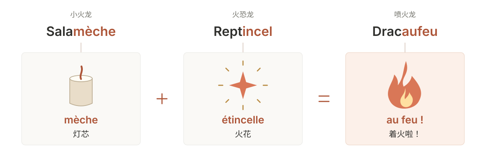
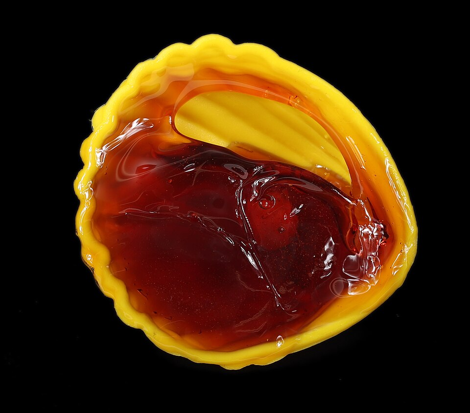

Libération 做过一个很有意思的专题：《Pokémon, traduisez-les tous》，请 Julien Bardakoff 把第一代宝可梦的法语名字逐个拆开讲。他聊到日文原名里的双关，也聊到法语译名是怎么想出来的。
有些名字一看就懂，有些还真得听他解释。下面这几组尤其值得一说。
御三家：名字也会一起进化
妙蛙种子一家


先看日文。共同的 フシギ（不思議） 是「奇怪、不可思议」，后面的 ダネ、ソウ、バナ 则分别对应种子、草和花。妙蛙种子的名字 フシギダネ，念起来又是「不思議だね」——「真奇怪啊」。
Bardakoff 在笔记里把前两个名字想象成研究者的一问一答：一个看着小家伙说「真奇怪啊」，另一个用 フシギソウ 接话，「是挺奇怪的」。名字既在说植物，又像随口说出来的一句话。命名笔记
法语没能把这段对话也带过去，但留下了「奇怪」和植物的组合：bulbe 是球茎，herbe 是草，flor- 是花的词根，bizarre 则是「奇怪的」。日文把共同的 フシギ 放在开头，法文把相近的声音留在末尾；两边的名字念下来，都能听出它们是一家子。
小火龙一家


小火龙的日文名 ヒトカゲ（Hitokage），换个地方断开，就有两种读法：
Bardakoff 由后一种读法联想到：小火龙尾巴上的火，能在洞壁上照出影子。这层双关到了法语里留不住，他便把另一个笑话拆进了三次进化里：命名笔记

{kind=link}
这三个法语名字的前半截也各有来历：salamandre（蝾螈）、reptile（爬行动物）和 dragon（龙）。后半截连起来，才是「灯芯加火花，着火啦」。本人访谈
单独看，每个名字都能对上角色的样子。连起来才发现，原来从小火龙开始就在铺垫了。
杰尼龟一家


ゼニガメ（Zenigame） 里的 ゼニ（銭） 是钱币，カメ（亀） 是龟。Bardakoff 读到的是一只钱币般小巧的龟，于是用了 carapace（甲壳）＋ puce（跳蚤），组成 Carapuce。钱币换成跳蚤，小小一只的感觉还在。命名笔记
进化成 Carabaffe，名字里就有了 baffe（巴掌）。到了最后，日文的 カメックス 让译者想到怪兽名字和 max 的音感；法文则用 tortue（龟）＋ tank（坦克），直接变成 Tortank。命名笔记
前两个法语名字念着还挺可爱，Tortank 就没那么客气了。看看水箭龟背上那两根炮管，倒也合适。
胖丁的名字里有糖

プリン（Purin） 就是布丁。只看中文「胖丁」，不太容易想到它原本直接叫一种甜点。Bardakoff 想沿着甜食的方向找，于是选中了法国的一种老式糖果 
布丁换成了糖果，甜甜软软的感觉还在。尤其是后面重复的 dou-dou，念着就很像给小朋友起昵称的口气。哪怕不知道这种糖，看着胖丁圆滚滚的样子，也觉得叫这个名字挺合适。
九尾：倒过来看看

日文的 キュウコン（Kyūkon） 已经把「九」写进了读音：キュウ（kyū） 是九，コン（kon） 则是日语里狐狸的叫声。这是 Bardakoff 在笔记中给出的拆法。命名笔记
到了 Feunard，能认出 feu（火） 和 renard（狐狸），九却好像不见了。其实，把开头的 feun 倒过来，恰好就是 neuf（九）。
NEUF → FEUN → FEUNARD
这个 neuf 藏得太顺了，没人提醒还真不容易发现。Bardakoff 自己也颇为得意，在笔记里讲完词源，还提议让它进最佳译名的前三名。
大针蜂，还是一位火枪手

日文名 スピアー（Supiā） 来自英语 spear，也就是「长矛」。原名已经指向了它身上的武器，法语顺着这个方向，又多走了几步。
Dardargnan 一口气凑了三个梗：dard 是螫针，dare-dare 是「赶紧、飞快地」，还有《三个火枪手》里的 d’Artagnan（达达尼昂）。命名笔记
两根长针像剑，动作又快，于是就借了达达尼昂的名字。知道这个梗以后，再看大针蜂伸着双针的样子，倒真有点剑客的架势。
大葱鸭，名字里却有朝鲜蓟

日文 カモネギ（Kamonegi） 拆开是 カモ（鸭）＋ ネギ（葱），中文名也是这两样东西。但日本读者还能想到一句俗语：
鴨が葱を背負って来る。
鸭子背着葱来了。
鸭子自己送上门，连下锅的配菜都带好了。这句话说的是好事送上门、事情对自己格外有利，也常用在占便宜的语境里。知道这个梗，再看它随身带着的葱，就有点替它担心了。俗语释义
这层意思很难挪进一个法语名字。Bardakoff 最后选的是 canard（鸭子）＋ artichaut（朝鲜蓟），组成 Canarticho。
可它拿的明明是葱。
Bardakoff 当然知道。在后来的访谈里，他说自己顺着 canard 的发音往下找，想到 artichaut，就觉得 Canarticho 很好玩。至于手里拿的根本不是朝鲜蓟——他喜欢的恰恰就是这种荒诞。本人访谈
于是，大葱鸭就带着一株和名字对不上的葱，留在了法语图鉴里。